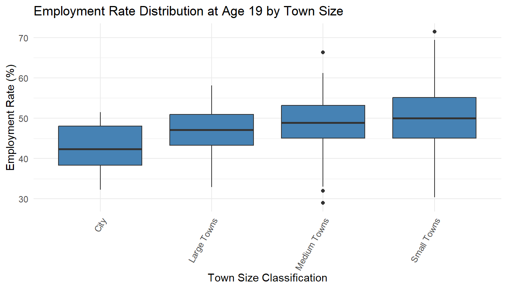
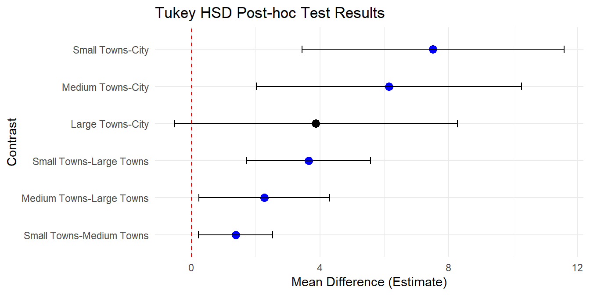

You might think that moving to a big city is the sure way to find a job, especially when you’re just starting out at 19. But what if I told you that small towns actually offer better job prospects for young adults? It’s true! Data shows that 19-year-olds living in smaller towns have higher employment rates than those in big cities. And the more we look into it, the more the data reveals that size does matter when it comes to landing that first job.
The study looked at employment rates across four types of towns—small, medium, large, and cities in UK. While cities are often seen as places full of opportunity, the numbers tell a different story. Small towns had the highest median employment rates, while cities, with all their hustle and bustle, had the lowest.
To make sure these differences weren’t just random flukes, we compared the employment data across the different town sizes. Imagine it like a reality show where each town size competes to prove it offers better job prospects, and this in statistics is known as ANOVA. And as we reviewed each contestant’s performance, the results Table 1 became crystal clear: small and medium towns consistently came out on top when it came to employment rates, leaving cities trailing behind.
| term | df | sumsq | meansq | statistic | p.value |
|---|---|---|---|---|---|
| Size_Classification | 3 | 2066 | 688.6 | 15.7 | 0 |
| Residuals | 1095 | 48003 | 43.8 | NA | NA |
Now, you might wonder: how did we figure this out without just taking the numbers at face value? Think of it this way—when you’re comparing the job market in different places, there are a lot of factors that could skew the results. So, to be extra sure, we had to put the data through a “fairness filter”, and the filter I am referring to is the post-hoc Tukey HSD test. This filter looks at all the town sizes and checks whether the differences in job rates are big enough to be meaningful, or if they might just be due to random chance.
And what did the filter show?Table 2
| contrast | estimate | conf.low | conf.high | adj.p.value |
|---|---|---|---|---|
| Large Towns-City | 3.87 | -0.530 | 8.28 | 0.107 |
| Medium Towns-City | 6.14 | 2.021 | 10.27 | 0.001 |
| Small Towns-City | 7.52 | 3.450 | 11.59 | 0.000 |
| Medium Towns-Large Towns | 2.27 | 0.237 | 4.31 | 0.022 |
| Small Towns-Large Towns | 3.65 | 1.723 | 5.57 | 0.000 |
| Small Towns-Medium Towns | 1.38 | 0.228 | 2.52 | 0.011 |
Small towns really do provide better chances for young adults to get a job. To get even more specific, we looked at each pair of town sizes to figure out which ones truly stand apart.

The conclusion was loud and clear: young people in small and medium towns had a significantly better shot at finding jobs than those in the big cities.
Why would this be the case?
The reasons seem to distill down to a few key factors.
First, in smaller towns, there’s less competition for available jobs. While cities may have thousands of openings, they also have thousands of applicants. In smaller towns, job seekers are often competing with a much smaller pool of candidates, making it easier to land a job.
Another factor is networking. In small towns, personal connections can play a big role in getting your foot in the door. Knowing the local shop owner or a family friend who works at the factory might be just the edge you need. In big cities, where many people are outsiders, these networks don’t function as effectively.
One more factor could be the perception of the available jobs. Young adults in cities might feel overwhelmed or discouraged by the high competition, or they might not even be aware of entry-level positions that aren’t as visible among the numerous listings for more experienced candidates. In smaller towns, job openings might be fewer, but they’re often better suited for young people just starting out in their careers.
Interestingly, this pattern holds even across medium and large towns, which also outperformed cities, though to a lesser extent than small towns.
This study challenges the long-held belief that moving to the city is the best path to career success. For many young adults, the reverse might be true. Cities may offer more options on paper, but small towns provide better chances of landing that first job. For policymakers, this suggests a need to focus on supporting young adults in cities, where high competition and saturation are real barriers.
This analysis was conducted using data from the TidyTuesdayR project, sourced from R for Data Science (2024). Employment rates for 19-year-olds were compared across different town sizes using statistical methods, confirming that smaller towns offer better employment prospects for young adults than big cities.
Data sources: R for Data Science (TidyTuesday dataset: Employment Rates), UK Government (Town size and demographic data), Census 2011 (Population and employment data).
ONS. (2023).Why Do Children and Young People in Smaller Towns Do Better Academically Than Those in Larger Towns? Office for National Statistics